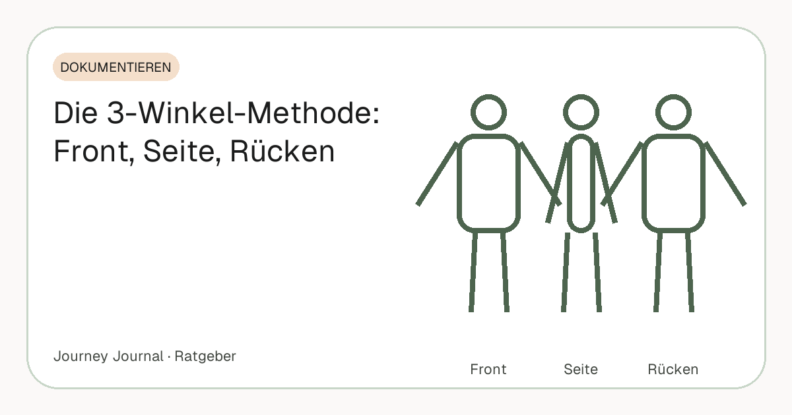

Ratgeber · Dokumentieren · 5 Min. Lesezeit
Die 3-Winkel-Methode: Front, Seite, Rücken – so dokumentierst du deinen Körper wie ein Profi
Trainerinnen und Coaches arbeiten seit Jahrzehnten mit demselben Standard: drei Winkel, gleiche Bedingungen, feste Abstände. Der Grund ist einfach – der Körper verändert sich nicht gleichmäßig, und ein einzelnes Frontfoto zeigt nur einen Bruchteil davon. Dieser Artikel erklärt die Pose für jeden der drei Winkel, die typischen Fehler und den einen Handgriff, der die Bilder über Monate vergleichbar hält.

Teil unseres Guides: Progress-Fotos: Der komplette Guide – Aufnahme, Rhythmus, Vergleich, Speicherung
Kurz gesagt
- Drei Winkel, eine Haltung: Front, Seite (immer dieselbe Körperseite), Rücken – aufrecht, entspannt, Arme leicht abgespreizt.
- Die Seite zeigt Bauch und Haltung, der Rücken verändert sich oft zuerst – beides sieht ein Frontfoto nicht.
- Ghost-Bild statt Augenmaß: das letzte Foto halbtransparent über das Kamerabild legen, dann stimmen Abstand, Höhe und Pose automatisch.
- Ein Set pro Woche reicht. Häufiger bringt nur Tagesrauschen, seltener reißt Lücken.
- Vergleichen frühestens nach vier Wochen – vorher wird dokumentiert, nicht bewertet.
Warum ein Frontfoto nicht reicht
Fett wird nicht gleichmäßig abgebaut, und Haltung verändert sich mit dem Gewicht. Wer nur von vorn fotografiert, sieht die Taille – aber nicht das Bauchvolumen im Profil, nicht die Rückenlinie, nicht die Schultern. Gerade in den ersten Wochen, in denen die Front kaum etwas hergibt, zeigt die Seitenansicht oft schon den ersten Unterschied.
Dazu kommt ein zweiter Grund: Vergleichbarkeit. Ein Winkel lässt sich schlecht reproduzieren, wenn er nicht definiert ist. „Ungefähr von vorn“ ist beim nächsten Mal zehn Grad gedreht, und die Taille wirkt schmaler oder breiter, ohne dass sich etwas geändert hätte. Drei feste Winkel sind drei definierte Positionen – und damit drei Serien, die sich über Monate ehrlich vergleichen lassen.
Front: der Überblick
Gerade stehen, Gewicht auf beiden Füßen, Füße etwa schulterbreit, Blick in die Kamera. Die Arme leicht vom Körper abgespreizt, damit die Taille frei bleibt – hängen sie eng an, verdecken sie genau die Stelle, an der sich am meisten tut. Nicht anspannen, nicht einziehen, normal atmen und am Ende des Ausatmens auslösen.
Der häufigste Fehler vorn ist der Kopf: Wer das Kinn hebt oder senkt, verändert die Halslinie und das Gesicht, und das Gesicht ist der Teil, an dem andere Menschen Veränderung zuerst wahrnehmen. Blick geradeaus auf die Kamera, jedes Mal.
Seite: wo sich Haltung und Bauch zeigen
Aufrecht im Profil, Blick geradeaus (nicht zur Kamera), Arme natürlich hängen lassen oder leicht nach hinten nehmen, damit sie den Bauch nicht verdecken. Die Seitenansicht zeigt, was die Front verbirgt: Haltung, Bauchvolumen, Rückenlinie, die Position der Schultern. Bei Gewichtsverlust passiert hier oft das Sichtbarste.
Entscheidend ist, immer dieselbe Seite zu fotografieren. Linke und rechte Körperhälfte sind nie spiegelgleich, und ein Vergleich links gegen rechts zeigt Unterschiede, die nichts mit Fortschritt zu tun haben. Lege dich auf eine Seite fest und notiere sie – oder lass dich von einer Silhouette im Kamerabild führen.
Rücken: die vergessene Perspektive
Gleiche Haltung wie vorn, nur von hinten: Füße schulterbreit, Arme leicht abgespreizt, Kopf gerade. Der Rücken verändert sich bei vielen Menschen früh – die Linie der Schulterblätter, die Taille von hinten, der untere Rücken – und wird fast nie fotografiert, weil man ihn selbst nicht sieht.
Praktisch braucht der Rücken den Timer oder ein Stativ, denn ein Selfie von hinten gibt es nicht. Zehn Sekunden Vorlauf reichen: auslösen, auf die Markierung stellen, umdrehen, ruhig stehen. Wer den Rücken weglässt, verliert die Perspektive, die nach drei Monaten oft am deutlichsten spricht.
Bedingungen, die bei allen drei Winkeln gleich bleiben
Die drei Winkel sind nur die halbe Methode. Die andere Hälfte sind Bedingungen, die sich nie ändern: gleiche Uhrzeit (morgens, nüchtern), gleicher Ort mit Tageslicht von vorn, gleicher Abstand zur Kamera, gleiche Kamerahöhe (Brust- bis Bauchhöhe), gleiche Kleidung. Was davon wechselt, verfälscht den Vergleich – und zwar stärker als die meisten erwarten. Ein Hoodie heute und ein Shirt nächste Woche, und die Bilder sind wertlos.
Der Abstand verdient besondere Aufmerksamkeit: Ein Schritt näher an die Kamera, und der Körper wirkt breiter. Markiere die Standposition auf dem Boden – ein Streifen Klebeband genügt – und stelle die Kamera an einen festen Platz, etwa an die Wand gelehnt oder auf ein kleines Stativ. Die vollständige Liste der Bedingungen steht in den sieben Regeln für vergleichbare Progress-Fotos.
Rhythmus: wöchentlich reicht
Ein Drei-Winkel-Set pro Woche, immer am selben Wochentag zur selben Zeit. Häufiger bringt nur Rauschen: Tagesschwankungen durch Wasser, Verdauung und Schlaf sind auf Fotos sichtbar und haben mit Fettabbau nichts zu tun. Seltener reißt Lücken, und Lücken sind der Anfang vom Aufhören.
Wer täglich etwas festhalten möchte, nimmt dafür ein schnelles Selfie oder ein kurzes Video-Statement – die Gewohnheit zählt. Das saubere Set aus drei Winkeln bleibt die Wochenaufgabe. Den ersten ernsthaften Vergleich trägst du für Woche vier in den Kalender ein; warum vorher nichts zu sehen ist, erklärt die Zeitleiste von Woche 1 bis 12.
Der Trick mit dem Ghost-Bild
Wer sein letztes Foto halbtransparent über das Kamerabild legt, steht automatisch wieder gleich – gleicher Abstand, gleiche Höhe, gleiche Pose, gleicher Winkel. Das ist der eine Handgriff, der Vergleichbarkeit über Monate garantiert, ohne dass man sich jedes Mal an Klebeband und Notizen erinnern muss. Für das erste Foto, wenn es noch kein Vorbild gibt, hilft eine Silhouette im Kamerabild.
Ohne App geht es auch, nur umständlicher: das letzte Bild auf einem zweiten Gerät öffnen, die Kamera auf ein festes Stativ setzen und die Standmarkierung nutzen. Entscheidend ist nicht das Werkzeug, sondern dass der Abgleich jedes Mal stattfindet.
Was die Forschung dazu sagt
Für Fotos selbst gibt es kaum Studien – für das Prinzip dahinter umso mehr. Die Übersichtsarbeit von Burke und Kollegen (2011) wertete Studien zur Selbstbeobachtung beim Abnehmen aus und fand durchgängig: Wer regelmäßig dokumentiert, nimmt mehr ab. Drei-Winkel-Fotos sind eine Form dieser Selbstbeobachtung – eine, die nicht nur die Masse, sondern die Form festhält.
Dass Veränderung eine Schwelle hat, bevor sie sichtbar wird, zeigen Re und Rule (2016): Im Gesicht nehmen andere einen Unterschied erst ab etwa 1,3 BMI-Punkten wahr, bei 1,75 m Körpergröße grob vier Kilo. Genau deshalb lohnt sich das Set aus drei Winkeln: Es zeigt Veränderung am Körper, bevor sie im Gesicht ankommt.
Häufige Fragen
Brauche ich wirklich alle drei Winkel?
Ja, wenn du Veränderungen fair beurteilen willst. Die Seite zeigt Haltung und Bauch, der Rücken verändert sich oft zuerst – ein Frontfoto allein sieht beides nicht.
Welche Seite soll ich fotografieren – links oder rechts?
Egal, aber immer dieselbe. Beide Körperhälften unterscheiden sich, ein Vergleich links gegen rechts zeigt Unterschiede, die nichts mit Fortschritt zu tun haben.
Was ziehe ich für Progress-Fotos an?
Immer dasselbe: körperbetont, wenig Stoff – kurze Hose, gegebenenfalls Sport-BH. Entscheidend ist nicht was, sondern dass es jedes Mal gleich ist.
Wie mache ich das Rückenfoto allein?
Mit Timer oder Stativ: Kamera fest hinstellen, zehn Sekunden Vorlauf, auf die Bodenmarkierung stellen, umdrehen, ruhig stehen.
Wie oft sollte ich das Drei-Winkel-Set machen?
Einmal pro Woche, gleicher Wochentag, gleiche Uhrzeit. Täglich reicht ein schnelles Selfie für die Gewohnheit.
Quellen
- Burke L. E., Wang J., Sevick M. A. (2011): Self-monitoring in weight loss: a systematic review. J Am Diet Assoc 111(1) – Selbstbeobachtung ist mit größerem Gewichtsverlust verbunden
- Re D. E., Rule N. O. (2016): Heavy Matters. Social Psychological and Personality Science 7(1) – Wahrnehmungsschwelle sichtbarer Veränderung im Gesicht: etwa 1,3 BMI-Punkte
Dieser Artikel ersetzt keine ärztliche Beratung. Bei einer größeren Gewichtsreduktion ist eine medizinische Begleitung sinnvoll.